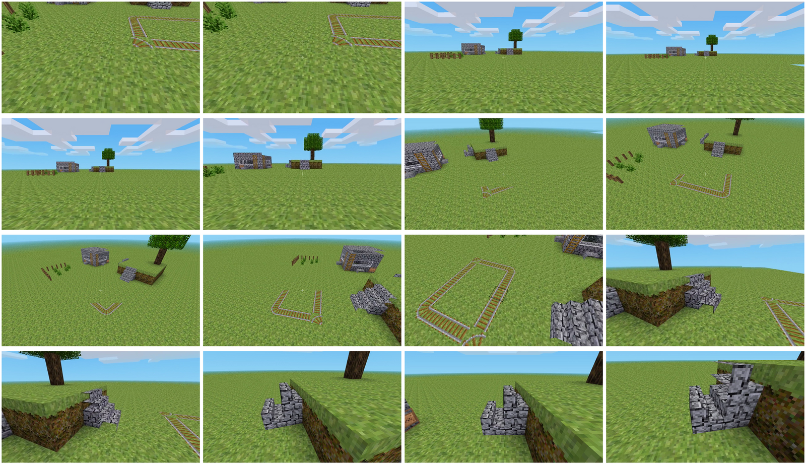
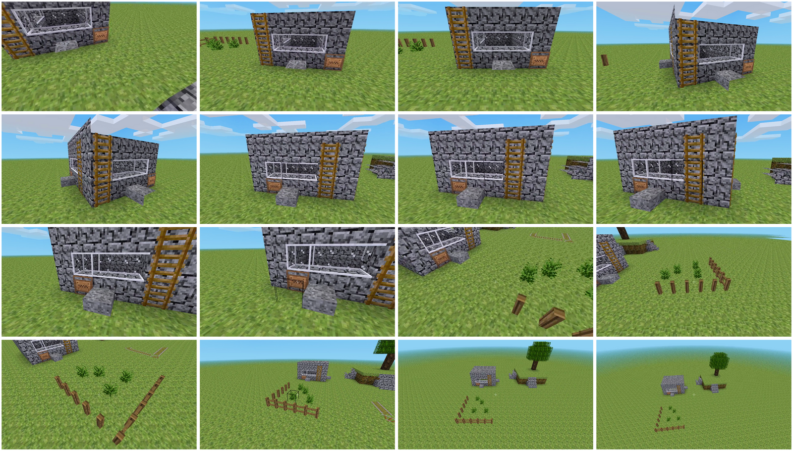
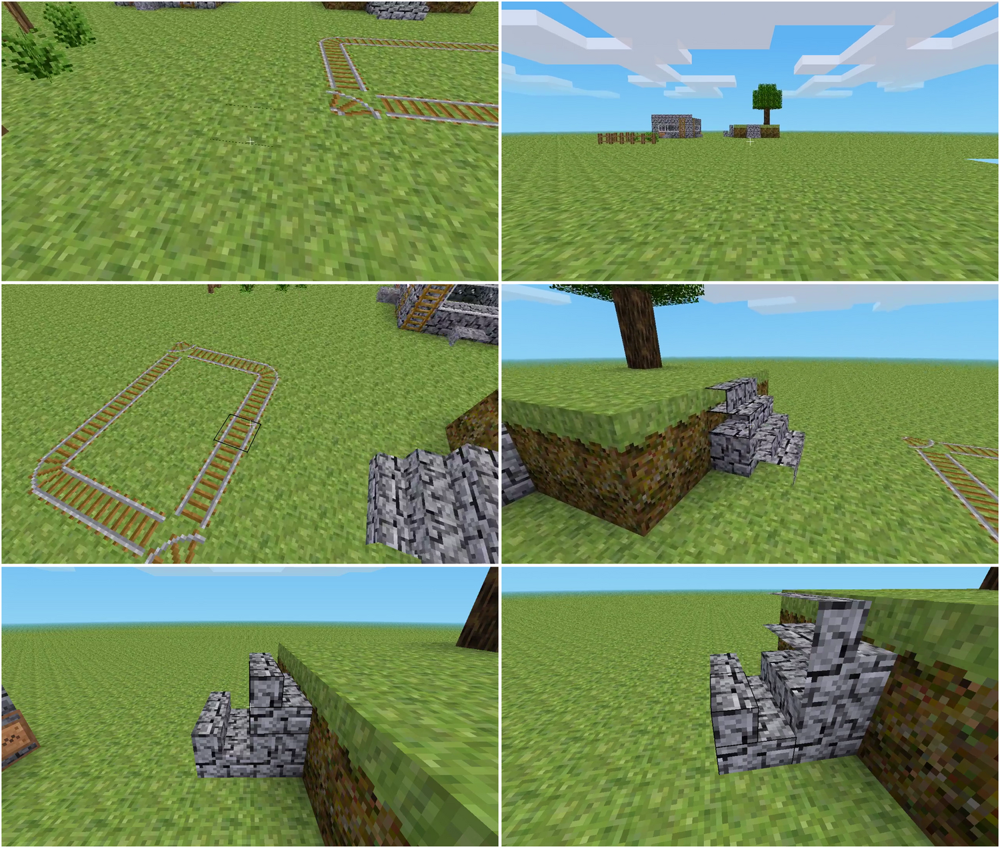
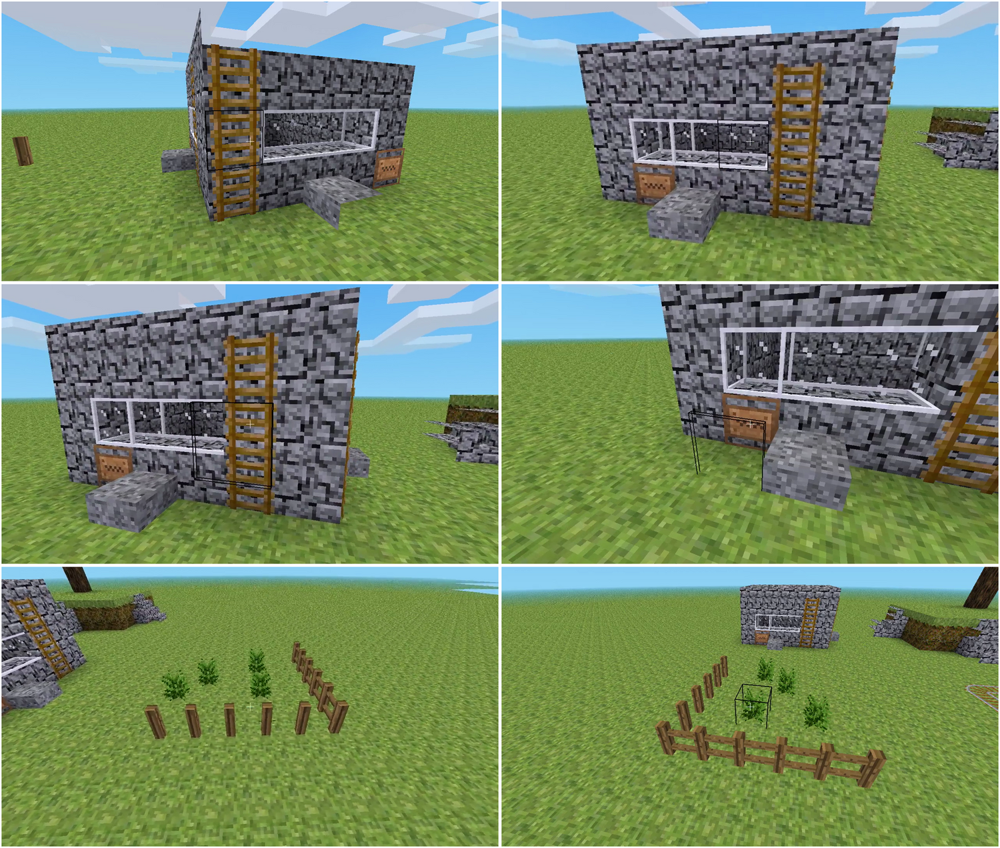

Eval: luanti_org__luanti_15821_mm
Every dimension holds. Difficulty meets Option A: no-image 0/3 (KNSxx3s, hxqbksk, wwL8dZA) and with-image exactly 1/4 (AEURini 1.0, 9/9 f2p + 9/9 p2p; Ri5pb59, dMNNnzm, tnZgnKu fail). Attempt12 differs from the reviewed Attempt8 only in instruction.md, task.toml (title, difficulty text), and the asset description in ASSET_MANIFEST.json / evidence_bundle.json. environment/ (Dockerfile, bugs, recording.mp4), solution/ and tests/ are byte-identical, so the Attempt8 local oracle 1.0 / nop 0.0 / identical re-run still apply, and the CB oracle/nop for Attempt12 match them. Symptom Specificity stays a non-fail 3 ([Non-Fail - Image-carried Symptom]): the element types are now named, but the linked-block and shaped-block defects are stated only as categories, and the exact defects are left to the clip.
Scorecard
Every dimension in rubric order. Click a cell to see what is wrong (or the evidence, if it passed).
diff -rq): only instruction.md, task.toml, environment/assets/ASSET_MANIFEST.json and evidence_bundle.json differ (the last two only in the asset description, "parts" -> "blocks"). All 11 fixed files present and non-empty: task.toml (5515 B), instruction.md (1239 B), evidence_bundle.json (995 B), environment/Dockerfile (2970 B), environment/assets/ASSET_MANIFEST.json (606 B), solution/fix.patch (5364 B), solution/solve.sh (349 B), tests/config.json (1882 B), tests/test.patch (25168 B), tests/test.sh (10434 B), tests/verifier.py (6623 B). json.load passes on all JSON files; tomllib parses task.toml; verifier.py is unchanged from Attempt8 (py_compile passed there). recording.mp4 is the same file (sha256 bcc16a63…): h264 1280x720, 30 fps, 63.0 s. Extras: environment/bugs/bug_01..06.patch and README.md, not a fail.task111/Attempt12/ has Tasks/ (capital T) and Trials/ as sibling root folders. Trials/ holds without_images/ (3 runs: KNSxx3s, hxqbksk, wwL8dZA; n_attempts: 3) and with_images/ (4 runs: AEURini, Ri5pb59, dMNNnzm, tnZgnKu; n_attempts: 4), so 7 trials (Option A layout). Oracle/, Nop/, Check/, Analyze/ are extras. The folder holds extracted trees, so the .tar.gz form itself was not checked.instruction.md points to /app/.harbor_assets/recording.mp4 (Dockerfile COPY assets/recording.mp4 /app/.harbor_assets/). Attempt12 now names element types ("Stairs, slabs and other shaped blocks", "A block that links up with its neighbours", "like the track" in What happens, "blocks that have a second picture painted over their main one", "a ladder or a sign fixed to a wall") but still no instance, direction, axis, file or mechanism. Which stairs face the wrong way (t≈25–31 s), which two rail corners bend wrong (t≈21 s), which window has bars at its joints (t≈45 s), which fence row is unjoined (t≈55 s), which wall's outline floats (t≈39–51 s), and that the track vanishes at a distance (t≈6 s) and the grass outline is hidden close up (t≈1 s) are only in the clip. Trials back this up (supporting only): all 3 no-image runs confirmed /app/.harbor_assets/recording.mp4: No such file or directory, and all 3 found the overlay pull in tile.cpp but kept it as correct (KNSxx3s: "a depth-only nudge (-1/-1) on that layer, so it is never drawn nearer than its block"; hxqbksk: "I found no fault here"; wwL8dZA: "as far as I can recall that matches upstream"), so they failed the 3 overlay f2p. 3/4 with-image runs tied the vanishing track and dashed grass outline in the clip to that pull and removed it. Leak scan: no repo name, URL, org, issue/PR link, file list or code identifier.[Non-Fail - Image-carried Symptom].task_type = "visual_regression" (Guidelines Step IV: decide which change is the accidental regression and reverse only that, keeping intended changes). The instruction describes drawing defects to fix and says "Everything else should keep looking as it does now". The defects are regressions against intact counterparts of the same kind in the same clip (the other stairs, the other window, the X-fence). Upstream issue 15821 is a regression of the overlay polygon offset. The text fits the type reasonably.bcc16a63…); only its description changed ("parts" -> "blocks"), which is still true. Naming table (file | role | what the frames show | what name/role/instruction claim | true? | agents confused?):recording.mp4 | recording | an uncut 63 s first-person clip of a devtest scene at the injected base: a track loop, stairs on a grass hill, a cobble house with framed-glass windows, ladder, sign and slab, and two fences; the camera stops on blocks so the outline appears | neutral name; description: "uncut 63-second player-eye clip … stops on one, so the game marks what the player is pointing at"; instruction: "Several things go wrong with the blocks in recording.mp4" | true (sha256 bcc16a63… = manifest; frames in evidence/) | no (no run treated the clip as the expected state).Asset vs f2p, per defect (preconditions from
test.patch → state in the clip → reachable?):(1) 3 overlay f2p (
test_tile_polygon_offset.cpp: a cube with an overlay on every side; applyMaterialOptions must not pull layer 1 toward the camera; a node without an overlay gets no offset) → grass ground with an overlay: the outline is drawn dashed or hidden at t≈1 s and the track lying on it is gone at t≈6 s → yes. Cross-check: the fix of what the clip shows (drop the pull on the overlay) passes all 3. Attempt12 trials confirm it: tnZgnKu removed the pull, AEURini and Ri5pb59 kept the overlay at true depth and pushed only the base layer of overlay blocks back; all three pass the 3 overlay f2p. dMNNnzm kept the pull and fails them, as it should.(2) Framed glass along X (3-pane row along X; no frame at the joints, frame at both ends) → house window running along X shows bars at the pane joints (t≈45 s), while the Z window is clean → yes.
(3) facedir 1/3 node box (stair; node, selection and collision boxes plus the drawn top) → east/west stairs built backwards (t≈25–31 s), north/south fine → yes.
(4) Node box beside a full block on X (slab next to stone; the open opposite face must be drawn) → see-through stairs and slab sides (t≈25 s, t≈39–47 s) → yes.
(5) Rail curves +X+Z / −X−Z (UV corners turned by 90/270) → two corner kinds of the loop bend the wrong way (t≈21 s) → yes.
(6) Fence posts along Z (bars join the posts, nothing beyond) → the Z fence row stands as separate posts, while the X row is joined (t≈55 s vs t≈57 s) → yes.
(7) Wallmounted Z selection box (param2 4/5) → the outline of the ladder and sign on the Z walls floats on the far side of the node (t≈39–51 s), while the X-wall ladder is fine → yes.
Step 7 (injected defects): all 6
environment/bugs/ defects appear in the clip. A fix that skips any of them leaves a visible defect in the clip on a supported drawtype (facedir node box, nodebox face culling, raillike, fencelike, glasslike_framed, wallmounted), so it would be an incomplete fix, not an alternative. Complete fix? Yes only with all 7.visual_regression is one of the seven valid values. The asset is one recording of the regressed state, with intact counterparts of each broken kind in the same clip; the rubric says not to penalize a valid choice even if another type fits better. The tags include multimodal, visual_regression and Luanti.environment/assets/recording.mp4: 10520876 B, sha256 bcc16a63d102965661fdf419f5d2145b20c9feb4eaab4d24f685ea262b357513. ASSET_MANIFEST.json: file: recording.mp4, same bytes and sha256, container_path: /app/.harbor_assets/recording.mp4. evidence_bundle.json: local_path: /app/.harbor_assets/recording.mp4, role recording, source_kind: captured_from_repo (an empty url is valid for captured evidence). instruction.md ref: /app/.harbor_assets/recording.mp4. Dockerfile: COPY assets/recording.mp4 /app/.harbor_assets/. All four agree. Attempt12 changed only the description text in the manifest and bundle; names, sha256, bytes and paths are unchanged.solution/fix.patch, tests/test.patch and environment/bugs/*.patch are byte-identical to Attempt8, where git apply --check /solution/fix.patch printed APPLY_CHECK_OK and git apply --check /tests/test.patch printed TESTPATCH_CHECK_OK in the QC-built image at harbor_base. The Attempt12 CB oracle reaches reward 1.0 (9/9, 9/9), which requires the patch to apply.diff --git paths in fix.patch are src/client/content_mapblock.cpp, src/client/tile.cpp, src/client/tile.h, src/mapnode.cpp and src/nodedef.cpp. That set equals files_edited exactly (compared in Python: True). No test, doc, lockfile or changeset path.tests/test.patch, tests/config.json, solution/fix.patch are byte-identical to Attempt8. Value-level assertions are float comparisons on SMaterial::PolygonOffsetSlopeScale / PolygonOffsetDepthBias (>= 0, overlay <= base, == 0 for a node without an overlay) and geometry checks with tolerances (sameBoxes is order-independent with EPS 1e-3; covered is point-in-triangle for either winding; hasFace checks normal and plane; rail corners are matched as pos+UV pairs in any vertex order; fence checks are bounds only). The accepted set is the material's float fields, which Irrlicht reads freely, so no string, enum or format spelling is involved.Equivalence table (alternative | correct in repo context? | test accepts):
• golden: positive offset on layer 0 only when an overlay exists | yes | yes
• remove the overlay offset entirely | valid (meets every instruction rule) | yes, run by the verifier in
tnZgnKu (Attempt12) and 79YZ3Xy/EuyuJbj (Attempt8): all 3 overlay f2p pass• keep the overlay at true depth, push only the base layer of overlay blocks back (new flag) | valid and plausible | yes, verified in
AEURini (reward 1.0) and Ri5pb59 (overlay f2p pass)• remove the offset and draw the overlay with
ZBuffer = ECFN_LESSEQUAL | valid and plausible | yes, verified in Attempt8 2nxVxqj (reward 1.0)• a different positive magnitude on the base (e.g. bias 2, or bias only) when an overlay is present | valid | yes by inspection (only
>=/<=)• the offset applied where the mesh materials are built instead of in
applyMaterialOptions | valid | yes by inspection (both layers return 0/0, and 0 <= 0)• keep the pull on the overlay (
dMNNnzm left it; Attempt8 cqnZGh3: slope 0, bias −1) | not valid: the instruction pins "nothing is drawn even slightly nearer than the surface it belongs to" | no (correctly rejected)• push every base layer back | not valid: the instruction says "blocks without one are fine as they are", and upstream's own comment in the golden says it intrudes on the neighbour's overlay Z space | no (correctly rejected).
Geometry f2p: every Attempt12 run (with and without the clip) fixed facedir, nodebox dirs, rails and wallmounted its own way and passed those f2p. All trial failures are defects the run never fixed (glass, fence) or the pinned overlay pull. Fix only what the evidence shows: that is all 7 defects (see dimension 6), which equals the oracle.
task.toml [metadata] f2p/p2p and tests/config.json f2p/p2p compared in Python: identical (9 + 9, same order). Each ID is a Catch2 TEST_CASE name in test.patch (unchanged). Every Attempt12 reward_detail.json (7 trials, CB oracle, CB nop) has exactly 18 keys with pass/fail and no missing or ambiguous, so verifier.py resolves each ID once.Nop (57SU4X7) p2p 9/9, CB Oracle (USS3TLX) 9/9, and the Attempt8 local nop/oracle/re-run 9/9 on the byte-identical environment, solution and tests. All 7 Attempt12 trials also pass 9/9 p2p.Nop f2p 0/9 (all 9 listed as fail), CB Oracle 9/9; Attempt8 local nop 0/9 and oracle 9/9 in both runs on the identical environment/solution/tests. Each f2p matches one defect, with a paired p2p for the unaffected direction.SMaterial fields. No GPU, timers, animation, randomness, fonts or network. test.sh installs nothing: it restores test paths from harbor_base, applies test.patch, runs an incremental cmake --build and runs luanti --run-unittests with a JUnit reporter. Since nothing is installed at test time, [verifier] network_mode = "public" raises no network-configuration issue. Oracle re-run: two local oracle runs gave identical reward_detail.json (18/18 pass), which is also identical to the CB oracle's. The local nop reward_detail.json is identical to the CB nop's. Attempt12 CB oracle reward_detail.json is again 18/18 pass, the same as both Attempt8 local oracle runs.verifier/reward.txt (job configs: without_images n_attempts: 3, with_images n_attempts: 4, both anthropic/claude-opus-5-5):No-image:
KNSxx3s 0.0 (f2p 5/9; overlay ×3, fence Z), hxqbksk 0.0 (5/9; overlay ×3, fence Z), wwL8dZA 0.0 (4/9; overlay ×3, glass X, fence Z), so 0/3 pass. Every no-image trajectory shows /app/.harbor_assets/recording.mp4: No such file or directory.With-image:
AEURini 1.0 (9/9 f2p, 9/9 p2p), Ri5pb59 0.0 (7/9; glass X, fence Z), dMNNnzm 0.0 (6/9; overlay ×3), tnZgnKu 0.0 (8/9; glass X), so exactly 1/4 pass. Option A is met.Checksums: the 4 with-image trials and the CB oracle/nop share task checksum
109377229a…; the 3 no-image trials use 7cb46dfd8d… (asset-stripped variant). with_images/task_manifest.json locks 18 files; all 18 sha256 match the Tasks/ on disk (0 mismatches). No trial has exception_info. Run time (informational): with-image 24.3, 37.1, 20.2, 16.5 min; no-image 12.3, 6.1, 12.0 min (agent execution).nb_triplet row, swapped facedir ±90 rotations, swapped X entries in nodebox_tile_dirs, swapped rail_kinds angles, a missing p2 = cur_node.p; reset, and swapped wallmounted ±Z rotations. Each fix is the minimal revert a real developer would write. All seven are visible in the clip next to correct counterparts, and AEURini (Attempt12) solved all seven from symptom plus clip, as did 2 Attempt8 runs on the same environment, so the task is feasible.109377229a…): oracle USS3TLX reward 1.0 (f2p 9/9, p2p 9/9), nop 57SU4X7 0.0 (f2p 0/9, p2p 9/9), no exceptions. Local: environment/, solution/ and tests/ are byte-identical to Attempt8 (diff -rq), so the Attempt8 QC-built image and its runs still apply: nop 0.0 (0/9, 9/9), oracle 1.0 (9/9, 9/9), oracle re-run 1.0 and identical, all with the full stage banners and reward=, no "could not apply test.patch". The instruction/task.toml/description edits are not in the verifier path (task.toml is blind to the agent, and the tests don't read the instruction). The Attempt12 CB reward_detail.json files match the local ones for oracle and nop.Delivery gate
Process checks run locally or read from the submitted runs. Each failure is scored under the dimension it belongs to, not as an extra dimension.
reward_detail.json (same reuse); matches the Attempt12 CB oracle.Oracle USS3TLX 1.0 (9/9, 9/9), CB Nop 57SU4X7 0.0 (0/9, 9/9), checksum 109377229a… = with-image trials.APPLY_CHECK_OK (fix.patch unchanged since Attempt8); CB oracle 1.0.reward.txt, reward.json, junit.xml, reward_detail.json; no exception_info.KNSxx3s 0.0, hxqbksk 0.0, wwL8dZA 0.0). Assets confirmed absent.AEURini 1.0; Ri5pb59, dMNNnzm, tnZgnKu 0.0). Exactly 1/4, Option A met.109377229a…; no-image 7cb46dfd8d… (assets stripped). Lock: 18/18 files match Tasks/ on disk.Tasks/ and Trials/ sibling root folders; 7 trials (3 no-image + 4 with-image). Archive form not checked (extracted trees).instruction.md. ASSET_MANIFEST.json is not copied into the image. .git history is dropped. Agent runs used network_mode = no-network.evidence_bundle.json local_path and the instruction ref all point to /app/.harbor_assets/recording.mp4.Trials
3 no-image runs (pass@3, all must fail) and 4 with-image runs (pass@4, exactly 1 must pass). Rewards come from each run's verifier/reward.txt.
| Trial | Mode | Reward | f2p | p2p | Min | Failed tests |
|---|---|---|---|---|---|---|
task_without_images__KNSxx3s | no-image | 0.0 | 5/9 | 9/9 | 12.3 | overlay: not pushed just because layer 1 overlay: not closer than geometry no overlay: no offset fence along Z |
task_without_images__hxqbksk | no-image | 0.0 | 5/9 | 9/9 | 6.1 | overlay: not pushed just because layer 1 overlay: not closer than geometry no overlay: no offset fence along Z |
task_without_images__wwL8dZA | no-image | 0.0 | 4/9 | 9/9 | 12.0 | overlay: not pushed just because layer 1 overlay: not closer than geometry no overlay: no offset framed glass along X fence along Z |
task_with_images__AEURini | with-image | 1.0 | 9/9 | 9/9 | 24.3 | — |
task_with_images__Ri5pb59 | with-image | 0.0 | 7/9 | 9/9 | 37.1 | framed glass along X fence along Z |
task_with_images__dMNNnzm | with-image | 0.0 | 6/9 | 9/9 | 20.2 | overlay: not pushed just because layer 1 overlay: not closer than geometry no overlay: no offset |
task_with_images__tnZgnKu | with-image | 0.0 | 8/9 | 9/9 | 16.5 | framed glass along X |
Issues & suggested fixes
Instruction – Symptom Specificity 3 · [Non-Fail - Image-carried Symptom]
What is wrong. Element types are named, but the shaped-block, linked-block and outline defects are stated only as categories / negated rules ("put together", "links correctly", "one closed box that fits"). The exact defects are carried by the clip. Not a fail under V27; record as
[Non-Fail - Image-carried Symptom].
Suggested fix. Optional, for a 5: state each defect in text without the cause, e.g. "some stairs face the wrong way and some shaped blocks are missing a side; some linked blocks join wrongly or not at all; the outline of a block fixed to a wall floats off it; the track and the outline on the grass are partly hidden". Caution: the task now sits exactly at Option A (1/4), and naming defects per type would likely make it easier, so weigh this against dimension 16. Any change to instruction.md changes the task checksum, so all 7 trials must be re-run.
Dimension details
1. Structure – Task Bundle Files 5 · Pass
| Evidence | Attempt12 vs Attempt8 (diff -rq): only instruction.md, task.toml, environment/assets/ASSET_MANIFEST.json and evidence_bundle.json differ (the last two only in the asset description, "parts" -> "blocks"). All 11 fixed files present and non-empty: task.toml (5515 B), instruction.md (1239 B), evidence_bundle.json (995 B), environment/Dockerfile (2970 B), environment/assets/ASSET_MANIFEST.json (606 B), solution/fix.patch (5364 B), solution/solve.sh (349 B), tests/config.json (1882 B), tests/test.patch (25168 B), tests/test.sh (10434 B), tests/verifier.py (6623 B). json.load passes on all JSON files; tomllib parses task.toml; verifier.py is unchanged from Attempt8 (py_compile passed there). recording.mp4 is the same file (sha256 bcc16a63…): h264 1280x720, 30 fps, 63.0 s. Extras: environment/bugs/bug_01..06.patch and README.md, not a fail. |
|---|---|
| What is wrong | Nothing found. |
| Suggested fix | None. |
2. Structure – Deliverables & Packaging 5 · Pass
| Evidence | task111/Attempt12/ has Tasks/ (capital T) and Trials/ as sibling root folders. Trials/ holds without_images/ (3 runs: KNSxx3s, hxqbksk, wwL8dZA; n_attempts: 3) and with_images/ (4 runs: AEURini, Ri5pb59, dMNNnzm, tnZgnKu; n_attempts: 4), so 7 trials (Option A layout). Oracle/, Nop/, Check/, Analyze/ are extras. The folder holds extracted trees, so the .tar.gz form itself was not checked. |
|---|---|
| What is wrong | Nothing found. Note: when submitting, package Tasks/ and Trials/ as separate Tasks.tar.gz and Trials.tar.gz that unpack to those exact top-level folder names. |
| Suggested fix | None. |
3. Instruction – Requires Visual Evidence 5 · Pass
| Evidence | instruction.md points to /app/.harbor_assets/recording.mp4 (Dockerfile COPY assets/recording.mp4 /app/.harbor_assets/). Attempt12 now names element types ("Stairs, slabs and other shaped blocks", "A block that links up with its neighbours", "like the track" in What happens, "blocks that have a second picture painted over their main one", "a ladder or a sign fixed to a wall") but still no instance, direction, axis, file or mechanism. Which stairs face the wrong way (t≈25–31 s), which two rail corners bend wrong (t≈21 s), which window has bars at its joints (t≈45 s), which fence row is unjoined (t≈55 s), which wall's outline floats (t≈39–51 s), and that the track vanishes at a distance (t≈6 s) and the grass outline is hidden close up (t≈1 s) are only in the clip. Trials back this up (supporting only): all 3 no-image runs confirmed /app/.harbor_assets/recording.mp4: No such file or directory, and all 3 found the overlay pull in tile.cpp but kept it as correct (KNSxx3s: "a depth-only nudge (-1/-1) on that layer, so it is never drawn nearer than its block"; hxqbksk: "I found no fault here"; wwL8dZA: "as far as I can recall that matches upstream"), so they failed the 3 overlay f2p. 3/4 with-image runs tied the vanishing track and dashed grass outline in the clip to that pull and removed it. Leak scan: no repo name, URL, org, issue/PR link, file list or code identifier. |
|---|---|
| What is wrong | Nothing found. Non-graded note: "nothing is drawn even slightly nearer than the surface it belongs to (this matters for blocks that have a second picture painted over their main one…)" is close to the mechanism, but it is a visible rule, and no text-only run turned it into the fix (0/3 on the overlay f2p). |
| Suggested fix | None required. |
4. Instruction – Symptom Specificity 3 · Non-Fail
[Non-Fail - Image-carried Symptom]
| Evidence | Prompt table (element | defect, text or image? | expected, text or image? | comparison pointed to | clue left to image | described correctly?): 1. "Stairs, slabs and other shaped blocks" | text gives only the category ("how some of them … are put together"); the actual defect (east/west stairs backwards, open X sides missing) is image-only | text: "face the way they were placed and are drawn whole, from every side" | none (correct counterparts are in the clip, not pointed to) | which block, which direction: image | yes. 2. "A block that links up with its neighbours" ("like the track" in What happens) | text: only "links to them correctly"; actual defects (two rail corners bent wrong, bars at the X window's joints, Z fence unjoined): image | text (generic) | none | which block, which axis: image | yes. 3. "what stays visible from close by and from far away" / blocks "that have a second picture painted over their main one" | text: "Nothing disappears into what it rests on" | text: "nothing is drawn even slightly nearer than the surface it belongs to" | none | what disappears (the track far away, the grass outline close up): image | yes. 4. "the box the game draws around the block the player points at", "a ladder or a sign fixed to a wall" | category in text; exact defect (box floating off the Z walls, outline on grass mostly hidden): image | text: "one closed box that fits around it" | none | which wall: image | yes. The generic opener is followed at once by the element types and the expected rules, so the symptom-specificity check passes, and nothing is described incorrectly. Elements are now named by type (an improvement on Attempt8's "parts"), but for rows 1, 2 and 4 the defect is stated only as a category or as the negation of an expected rule, and the exact defect is carried by the clip. That is the Image-carried Symptom case (3), not a pass and not a fail. Trajectory check (all 4 with-image runs): every run read the same symptom classes from the clip, and none took a visible defect for intended behaviour. AEURini found all seven. Ri5pb59 fixed stairs, sides, rails, wall box and overlay, and never reached the glass or fence code (missed, not misread). tnZgnKu fixed six and missed only the X-row glass. dMNNnzm fixed all six injected bugs and read the clip's "things sinking" symptom, but attributed it to the stairs: it inspected the overlay offset and wrote "Overlay polygon offset and the shaders look correct" and "These are already pulled forward only in the depth test … so nothing is drawn nearer than its surface". That is a misdiagnosis of the cause in code by one run of four, not agents taking the pictured symptom for intended behaviour (the rubric's example is 3/4 runs calling a bug glint normal shine), so it does not trigger the fail clause. |
|---|---|
| What is wrong | Element types are named, but the shaped-block, linked-block and outline defects are stated only as categories / negated rules ("put together", "links correctly", "one closed box that fits"). The exact defects are carried by the clip. Not a fail under V27; record as [Non-Fail - Image-carried Symptom]. |
| Suggested fix | Optional, for a 5: state each defect in text without the cause, e.g. "some stairs face the wrong way and some shaped blocks are missing a side; some linked blocks join wrongly or not at all; the outline of a block fixed to a wall floats off it; the track and the outline on the grass are partly hidden". Caution: the task now sits exactly at Option A (1/4), and naming defects per type would likely make it easier, so weigh this against dimension 16. Any change to instruction.md changes the task checksum, so all 7 trials must be re-run. |
5. Instruction – Task Type 5 · Pass
| Evidence | task_type = "visual_regression" (Guidelines Step IV: decide which change is the accidental regression and reverse only that, keeping intended changes). The instruction describes drawing defects to fix and says "Everything else should keep looking as it does now". The defects are regressions against intact counterparts of the same kind in the same clip (the other stairs, the other window, the X-fence). Upstream issue 15821 is a regression of the overlay polygon offset. The text fits the type reasonably. |
|---|---|
| What is wrong | Nothing found. |
| Suggested fix | None. |
6. Image – Evidence Quality 5 · Pass
| Evidence | The asset is byte-identical to Attempt8 (sha256 bcc16a63…); only its description changed ("parts" -> "blocks"), which is still true. Naming table (file | role | what the frames show | what name/role/instruction claim | true? | agents confused?):recording.mp4 | recording | an uncut 63 s first-person clip of a devtest scene at the injected base: a track loop, stairs on a grass hill, a cobble house with framed-glass windows, ladder, sign and slab, and two fences; the camera stops on blocks so the outline appears | neutral name; description: "uncut 63-second player-eye clip … stops on one, so the game marks what the player is pointing at"; instruction: "Several things go wrong with the blocks in recording.mp4" | true (sha256 bcc16a63… = manifest; frames in evidence/) | no (no run treated the clip as the expected state).Asset vs f2p, per defect (preconditions from test.patch → state in the clip → reachable?):(1) 3 overlay f2p ( test_tile_polygon_offset.cpp: a cube with an overlay on every side; applyMaterialOptions must not pull layer 1 toward the camera; a node without an overlay gets no offset) → grass ground with an overlay: the outline is drawn dashed or hidden at t≈1 s and the track lying on it is gone at t≈6 s → yes. Cross-check: the fix of what the clip shows (drop the pull on the overlay) passes all 3. Attempt12 trials confirm it: tnZgnKu removed the pull, AEURini and Ri5pb59 kept the overlay at true depth and pushed only the base layer of overlay blocks back; all three pass the 3 overlay f2p. dMNNnzm kept the pull and fails them, as it should.(2) Framed glass along X (3-pane row along X; no frame at the joints, frame at both ends) → house window running along X shows bars at the pane joints (t≈45 s), while the Z window is clean → yes. (3) facedir 1/3 node box (stair; node, selection and collision boxes plus the drawn top) → east/west stairs built backwards (t≈25–31 s), north/south fine → yes. (4) Node box beside a full block on X (slab next to stone; the open opposite face must be drawn) → see-through stairs and slab sides (t≈25 s, t≈39–47 s) → yes. (5) Rail curves +X+Z / −X−Z (UV corners turned by 90/270) → two corner kinds of the loop bend the wrong way (t≈21 s) → yes. (6) Fence posts along Z (bars join the posts, nothing beyond) → the Z fence row stands as separate posts, while the X row is joined (t≈55 s vs t≈57 s) → yes. (7) Wallmounted Z selection box (param2 4/5) → the outline of the ladder and sign on the Z walls floats on the far side of the node (t≈39–51 s), while the X-wall ladder is fine → yes. Step 7 (injected defects): all 6 environment/bugs/ defects appear in the clip. A fix that skips any of them leaves a visible defect in the clip on a supported drawtype (facedir node box, nodebox face culling, raillike, fencelike, glasslike_framed, wallmounted), so it would be an incomplete fix, not an alternative. Complete fix? Yes only with all 7. |
|---|---|
| What is wrong | Nothing found. |
| Suggested fix | None. |
7. Metadata – task_type 5 · Pass
| Evidence | visual_regression is one of the seven valid values. The asset is one recording of the regressed state, with intact counterparts of each broken kind in the same clip; the rubric says not to penalize a valid choice even if another type fits better. The tags include multimodal, visual_regression and Luanti. |
|---|---|
| What is wrong | Nothing found. Non-graded note: the Step IV evidence column for visual_regression is a before/after pair. A single clip of the broken state would also fit visual_bug_fix. |
| Suggested fix | None required. |
8. Evidence – Chain Consistency 5 · Pass
| Evidence | File environment/assets/recording.mp4: 10520876 B, sha256 bcc16a63d102965661fdf419f5d2145b20c9feb4eaab4d24f685ea262b357513. ASSET_MANIFEST.json: file: recording.mp4, same bytes and sha256, container_path: /app/.harbor_assets/recording.mp4. evidence_bundle.json: local_path: /app/.harbor_assets/recording.mp4, role recording, source_kind: captured_from_repo (an empty url is valid for captured evidence). instruction.md ref: /app/.harbor_assets/recording.mp4. Dockerfile: COPY assets/recording.mp4 /app/.harbor_assets/. All four agree. Attempt12 changed only the description text in the manifest and bundle; names, sha256, bytes and paths are unchanged. |
|---|---|
| What is wrong | Nothing found. |
| Suggested fix | None. |
9. Golden Fix – Applies Cleanly 5 · Pass
| Evidence | solution/fix.patch, tests/test.patch and environment/bugs/*.patch are byte-identical to Attempt8, where git apply --check /solution/fix.patch printed APPLY_CHECK_OK and git apply --check /tests/test.patch printed TESTPATCH_CHECK_OK in the QC-built image at harbor_base. The Attempt12 CB oracle reaches reward 1.0 (9/9, 9/9), which requires the patch to apply. |
|---|---|
| What is wrong | Nothing found. |
| Suggested fix | None. |
10. Golden Fix – Source-Only Scope 5 · Pass
| Evidence | The diff --git paths in fix.patch are src/client/content_mapblock.cpp, src/client/tile.cpp, src/client/tile.h, src/mapnode.cpp and src/nodedef.cpp. That set equals files_edited exactly (compared in Python: True). No test, doc, lockfile or changeset path. |
|---|---|
| What is wrong | Nothing found. |
| Suggested fix | None. |
11. Tests – Implementation Overfit 5 · Pass
| Evidence | tests/test.patch, tests/config.json, solution/fix.patch are byte-identical to Attempt8. Value-level assertions are float comparisons on SMaterial::PolygonOffsetSlopeScale / PolygonOffsetDepthBias (>= 0, overlay <= base, == 0 for a node without an overlay) and geometry checks with tolerances (sameBoxes is order-independent with EPS 1e-3; covered is point-in-triangle for either winding; hasFace checks normal and plane; rail corners are matched as pos+UV pairs in any vertex order; fence checks are bounds only). The accepted set is the material's float fields, which Irrlicht reads freely, so no string, enum or format spelling is involved.Equivalence table (alternative | correct in repo context? | test accepts): • golden: positive offset on layer 0 only when an overlay exists | yes | yes • remove the overlay offset entirely | valid (meets every instruction rule) | yes, run by the verifier in tnZgnKu (Attempt12) and 79YZ3Xy/EuyuJbj (Attempt8): all 3 overlay f2p pass• keep the overlay at true depth, push only the base layer of overlay blocks back (new flag) | valid and plausible | yes, verified in AEURini (reward 1.0) and Ri5pb59 (overlay f2p pass)• remove the offset and draw the overlay with ZBuffer = ECFN_LESSEQUAL | valid and plausible | yes, verified in Attempt8 2nxVxqj (reward 1.0)• a different positive magnitude on the base (e.g. bias 2, or bias only) when an overlay is present | valid | yes by inspection (only >=/<=)• the offset applied where the mesh materials are built instead of in applyMaterialOptions | valid | yes by inspection (both layers return 0/0, and 0 <= 0)• keep the pull on the overlay ( dMNNnzm left it; Attempt8 cqnZGh3: slope 0, bias −1) | not valid: the instruction pins "nothing is drawn even slightly nearer than the surface it belongs to" | no (correctly rejected)• push every base layer back | not valid: the instruction says "blocks without one are fine as they are", and upstream's own comment in the golden says it intrudes on the neighbour's overlay Z space | no (correctly rejected). Geometry f2p: every Attempt12 run (with and without the clip) fixed facedir, nodebox dirs, rails and wallmounted its own way and passed those f2p. All trial failures are defects the run never fixed (glass, fence) or the pinned overlay pull. Fix only what the evidence shows: that is all 7 defects (see dimension 6), which equals the oracle. |
|---|---|
| What is wrong | Nothing found. Non-graded note: removing the offset entirely (no Z-fight guard between overlay and base) passes too. Unit tests can't tell it from the golden, and it meets the stated rules, so this is leniency, not overfit. |
| Suggested fix | None. |
12. Tests – f2p/p2p Identifier Validity 5 · Pass
| Evidence | task.toml [metadata] f2p/p2p and tests/config.json f2p/p2p compared in Python: identical (9 + 9, same order). Each ID is a Catch2 TEST_CASE name in test.patch (unchanged). Every Attempt12 reward_detail.json (7 trials, CB oracle, CB nop) has exactly 18 keys with pass/fail and no missing or ambiguous, so verifier.py resolves each ID once. |
|---|---|
| What is wrong | Nothing found. |
| Suggested fix | None. |
13. Tests – p2p Classification 5 · Pass
| Evidence | All 9 p2p pass on nop and on oracle: Attempt12 CB Nop (57SU4X7) p2p 9/9, CB Oracle (USS3TLX) 9/9, and the Attempt8 local nop/oracle/re-run 9/9 on the byte-identical environment, solution and tests. All 7 Attempt12 trials also pass 9/9 p2p. |
|---|---|
| What is wrong | Nothing found. |
| Suggested fix | None. |
14. Tests – Discriminating (f2p) 5 · Pass
| Evidence | All 9 f2p fail on nop and pass on oracle: Attempt12 CB Nop f2p 0/9 (all 9 listed as fail), CB Oracle 9/9; Attempt8 local nop 0/9 and oracle 9/9 in both runs on the identical environment/solution/tests. Each f2p matches one defect, with a paired p2p for the unaffected direction. |
|---|---|
| What is wrong | Nothing found. |
| Suggested fix | None. |
15. Tests – Determinism 5 · Pass
| Evidence | The tests are pure CPU checks on generated meshes, node boxes and SMaterial fields. No GPU, timers, animation, randomness, fonts or network. test.sh installs nothing: it restores test paths from harbor_base, applies test.patch, runs an incremental cmake --build and runs luanti --run-unittests with a JUnit reporter. Since nothing is installed at test time, [verifier] network_mode = "public" raises no network-configuration issue. Oracle re-run: two local oracle runs gave identical reward_detail.json (18/18 pass), which is also identical to the CB oracle's. The local nop reward_detail.json is identical to the CB nop's. Attempt12 CB oracle reward_detail.json is again 18/18 pass, the same as both Attempt8 local oracle runs. |
|---|---|
| What is wrong | Nothing found. Cosmetic note: test.sh passes "${REPORTS[@]}", which is never defined. It expands to nothing and is harmless. |
| Suggested fix | None. |
16. Hardening – Difficulty (Model Trial Fails) 5 · Pass
| Evidence | From verifier/reward.txt (job configs: without_images n_attempts: 3, with_images n_attempts: 4, both anthropic/claude-opus-5-5):No-image: KNSxx3s 0.0 (f2p 5/9; overlay ×3, fence Z), hxqbksk 0.0 (5/9; overlay ×3, fence Z), wwL8dZA 0.0 (4/9; overlay ×3, glass X, fence Z), so 0/3 pass. Every no-image trajectory shows /app/.harbor_assets/recording.mp4: No such file or directory.With-image: AEURini 1.0 (9/9 f2p, 9/9 p2p), Ri5pb59 0.0 (7/9; glass X, fence Z), dMNNnzm 0.0 (6/9; overlay ×3), tnZgnKu 0.0 (8/9; glass X), so exactly 1/4 pass. Option A is met.Checksums: the 4 with-image trials and the CB oracle/nop share task checksum 109377229a…; the 3 no-image trials use 7cb46dfd8d… (asset-stripped variant). with_images/task_manifest.json locks 18 files; all 18 sha256 match the Tasks/ on disk (0 mismatches). No trial has exception_info. Run time (informational): with-image 24.3, 37.1, 20.2, 16.5 min; no-image 12.3, 6.1, 12.0 min (agent execution). |
|---|---|
| What is wrong | Nothing found. |
| Suggested fix | None. Note: the passing run found all seven defects; the three failures each missed a different subset (glass + fence, overlay, glass), so the pass is not a single-defect fluke. |
17. Hardening – Real & Feasible 5 · Pass
| Evidence | Seven coherent defects: the upstream overlay polygon offset (issue 15821, fixed by PR 15867, whose code makes up the golden's tile/nodedef part) and six injected one-line bugs of a type real code has: a swapped nb_triplet row, swapped facedir ±90 rotations, swapped X entries in nodebox_tile_dirs, swapped rail_kinds angles, a missing p2 = cur_node.p; reset, and swapped wallmounted ±Z rotations. Each fix is the minimal revert a real developer would write. All seven are visible in the clip next to correct counterparts, and AEURini (Attempt12) solved all seven from symptom plus clip, as did 2 Attempt8 runs on the same environment, so the task is feasible. |
|---|---|
| What is wrong | Nothing found. |
| Suggested fix | None. |
18. Gate – Oracle/Nop 5 · Pass
| Evidence | CB (Attempt12, checksum 109377229a…): oracle USS3TLX reward 1.0 (f2p 9/9, p2p 9/9), nop 57SU4X7 0.0 (f2p 0/9, p2p 9/9), no exceptions. Local: environment/, solution/ and tests/ are byte-identical to Attempt8 (diff -rq), so the Attempt8 QC-built image and its runs still apply: nop 0.0 (0/9, 9/9), oracle 1.0 (9/9, 9/9), oracle re-run 1.0 and identical, all with the full stage banners and reward=, no "could not apply test.patch". The instruction/task.toml/description edits are not in the verifier path (task.toml is blind to the agent, and the tests don't read the instruction). The Attempt12 CB reward_detail.json files match the local ones for oracle and nop. |
|---|---|
| What is wrong | Nothing found. |
| Suggested fix | None. |
19. Unauditable 5 · Pass
| Evidence | Complete and auditable: bundle, 7 trials with trajectories and verifier output, CB oracle/nop/check/analyze, and the Attempt8 local reproduction on byte-identical environment/solution/tests. |
|---|---|
| What is wrong | Nothing found. |
| Suggested fix | None. |
Visual evidence



